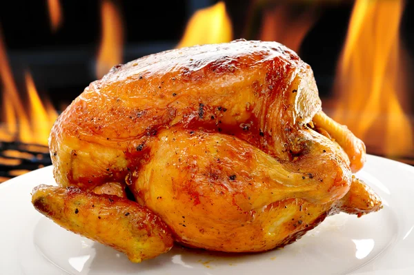

How to Roast Chicken
Roasting a whole chicken at home is easier than it seems. You'll find a detailed ingredients list and step-by-step instructions in the recipe below, but let's go over the basics.
Roasted chicken Ingredients
These are the ingredients you'll need to make the juiciest roast chicken recipe of your life.
- Chicken: This recipe starts with a 3-pound whole chicken. If your bird is larger or smaller, you'll need to adjust the recipe.
- Seasonings: This roasted chicken is simply seasoned with salt, black pepper and onion powder.
- Butter: Butter locks in moisture and gives the seasonings something to adhere to.
- Chicken: Stuff the chicken cavity with celery for subtle vegetal flavor. Plus, the celery will release even more moisture as the chicken cooks.
How to Roast a Chicken Step-By-Step
Here's a very brief overview of what you can expect when you make homemade roasted chicken.
- Season the chicken inside and out.
- Add the butter to the chicken and the pan.
- Stuff the cavity with celery.
- Bake until the chicken is fully roasted.
How Long does it Take to Roast Chicken?
In an oven preheated to 350 degrees F, a 3-pound whole chicken should be completely cooked in a little more than an hour. You'll know it's done when the meat is no longer pink at the bone, the juices run clear and an instant read thermometer inserted into the thickest past of the thigh (near the bone) reads 165 degrees F.